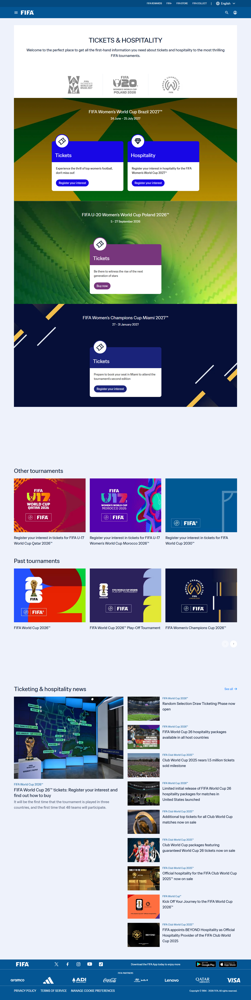
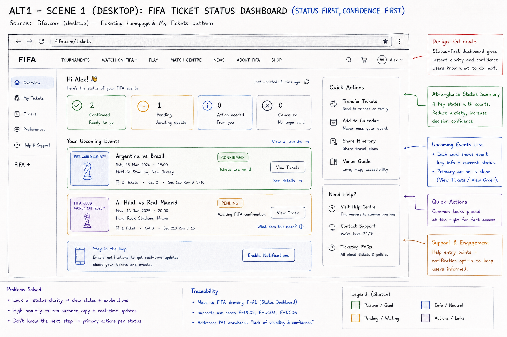
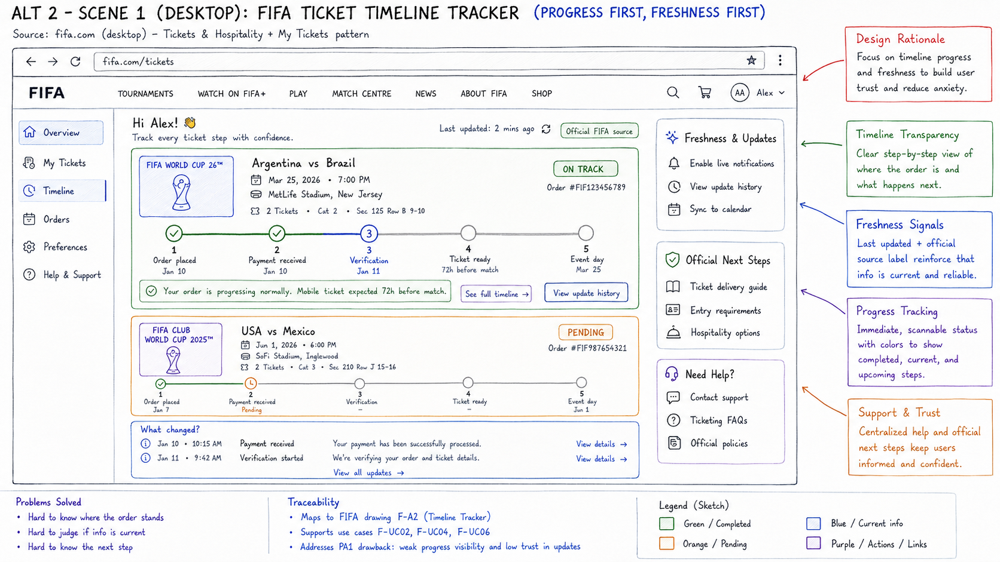
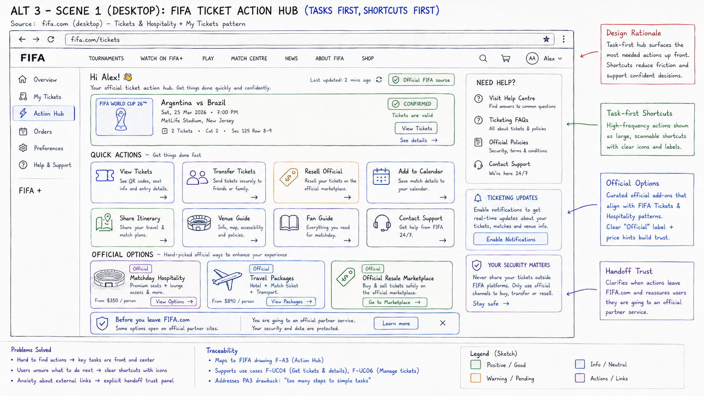
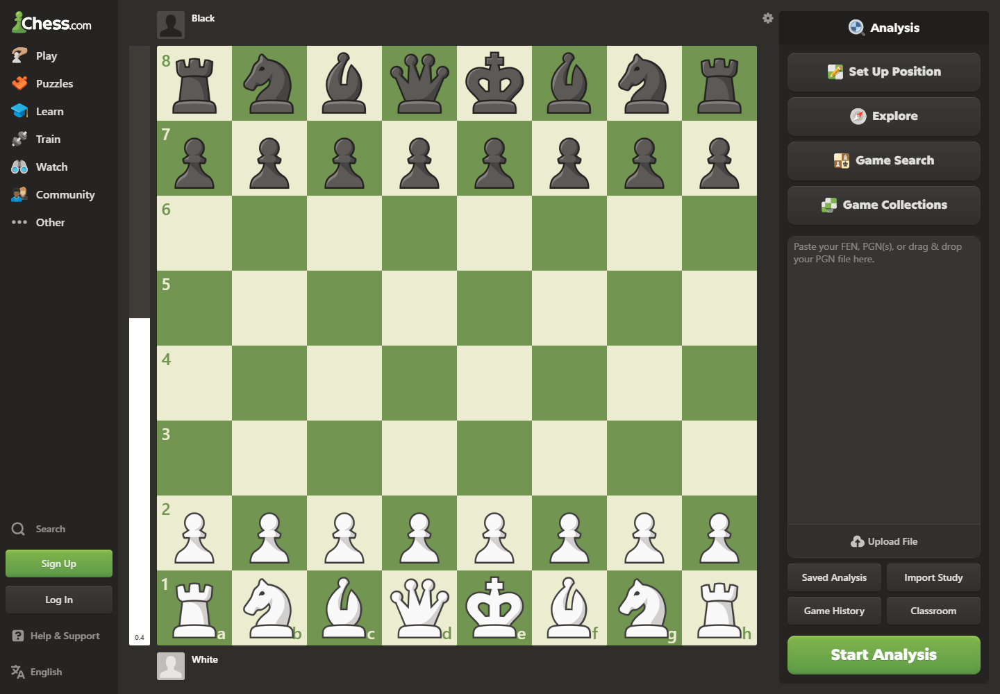
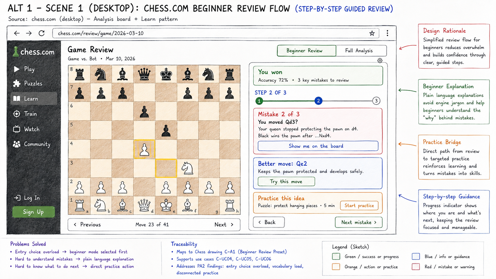
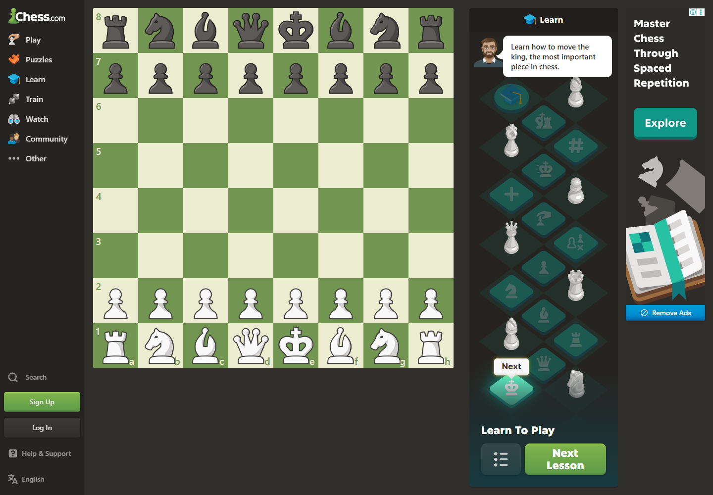
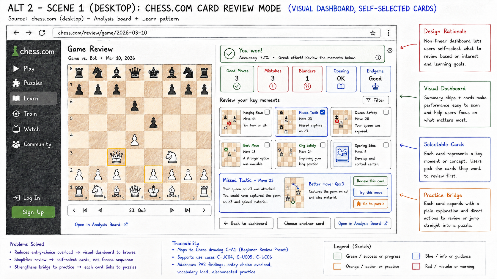
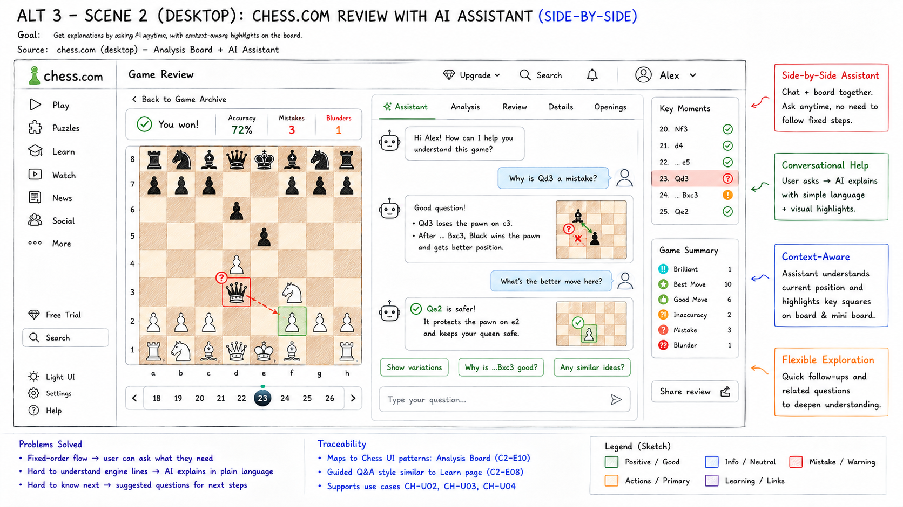

6 alternatives
one PA3 decision
Paper
prototypes
FIFA.com ticket confidence + Chess.com beginner review. Six lo-fi interaction models carried forward from PA1 → PA2 for formative testing.
Six hypotheses.
Two jobs to be done.
These are parallel alternatives for formative testing — not six final features intended to coexist.
Status
What is my ticket status now?
Progress
Where am I in the process?
Actions
What can I do right now?
Guided sequence
Show me one useful step at a time.
Self-selected cards
Let me choose the moment to review.
Conversation
Let me ask beside the board.
Ticket entry is tournament-first.

What the capture supports
The page organizes discovery around tournament logos and ticket / hospitality cards. Users choose an event card before they can reason about a ticket state.
What is not visible here
No consolidated cross-tournament status dashboard, persistent ticket timeline, or account-level next-step overview appears in this captured state.
PA2 finding carried forward
FIFA ticket action lacks consolidated decision confidence; outbound routes need trust context.
Status first.
Confidence first.

Problem
A user must quickly know whether tickets are valid, pending, cancelled, or waiting on them.
Interaction model
An account-level overview: status counts → upcoming event cards → primary action → help and notifications.
Delta from original
Replaces tournament-first discovery with a persistent, multi-event status surface while retaining FIFA navigation and official context.
Testable hypothesis
Users can identify the current ticket state and the safest next action without opening several event pages.
A fast read of what is true now.
Strength
High discoverability for state recognition; counts, validity copy, and event cards make the overview scannable.
Weakness
“Pending” can still be ambiguous if ownership, expected resolution, or the difference between “View Order” and “View Tickets” is unclear.
Formative-testing hypothesis
Ask users to explain one confirmed and one pending event in their own words, then choose the next action. Record wrong paths and hesitation.
Traceability
F-A1F-UC02 / 03 / 06
Progress first.
Freshness first.

Problem
Status labels alone do not explain where an order is, who owns the next step, or whether the information is current.
Interaction model
A progress-first surface: lifecycle milestones → current step → update history → official next steps.
Delta from original
Adds an explicit order lifecycle and provenance signals to a page that is otherwise organized around tournament entry.
Testable hypothesis
Users can point to the current milestone, say what happens next, and judge whether the update is official and fresh.
From “what is my status?” to “where am I?”
Strength
Progress visibility gives normal waiting a shape. The “last updated” and official-source labels support calibrated trust.
Weakness
Future gray milestones may look like tasks. Ownership and normal duration need to be explicit.
Formative-testing hypothesis
Ask users to locate the current stage, explain what is pending, and identify the next user-owned action without treating every milestone as an assignment.
Fundamental difference
Alt 1 current status Alt 2 process position
Tasks first.
Shortcuts first.

Problem
Common post-purchase actions are hard to find when entry pages are built around browsing instead of doing.
Interaction model
A task-first hub: ticket actions → calendar / itinerary / venue support → official options → provider boundary.
Delta from original
Reorders the surface around action execution and adds a visible “before you leave FIFA.com” handoff cue.
Testable hypothesis
Users find a common ticket action quickly and can tell whether an option is core ticket management or an external add-on.
The question becomes “what can I do?”
Strength
Recognition over recall: large labeled shortcuts make routine actions visible without hunting through navigation.
Weakness
Equal-weight actions and optional commercial options can create a new choice problem or make extras look required.
Formative-testing hypothesis
Give users a “transfer tickets” and an “official options” task. Observe first action, category errors, and whether they can explain the partner boundary.
Fundamental difference
Alt 1 state recognition Alt 2 process understanding Alt 3 task execution
Same ticket job.
Different mental model.
| Dimension | Original FIFA | Alt 1 · Status | Alt 2 · Timeline | Alt 3 · Actions |
|---|---|---|---|---|
| Primary user question | Which tournament card should I open? | What is my status now? | Where am I in the process? | What can I do right now? |
| Information architecture | Tournament cards, ticket / hospitality entry | State summary + event cards | Order milestones + updates | Quick actions + official options |
| Main benefit | Clear event discovery | Fast confidence check | Progress and freshness | Low-friction task execution |
| Main risk | Context is scattered after entry | Pending state may be non-diagnostic | Future steps may look user-owned | Choice overload / optional extras |
| Best-fit task | Discover an event | Triage ticket state | Understand waiting and next steps | Transfer, calendar, venue, support |
| Formative focus | Entry recognition | State comprehension | Ownership + freshness | First action + handoff trust |
Decision rule: do not declare a winner before real novice participants complete the same scenario tasks across all three alternatives.
Analysis starts with many choices.

What the capture supports
The Analysis entry presents several paths beside a board: Set Up Position, Explore, Game Search, Game Collections, upload / import, and Start Analysis.
Why this matters for beginners
A novice must decide where to begin before they know which path corresponds to “understand my last game.” That is a recall-heavy entry.
Bridge pattern in PA2
Learn-to-Play uses a simpler progressive path with an explanatory prompt and Next Lesson action. The three alternatives test different ways to bring that guidance into review.
One mistake.
One useful next step.

Problem
Beginners can see a board but not know which mistake matters or how to turn an explanation into practice.
Interaction model
A fixed sequence: Beginner Review → mistake → explanation → better move → Try this move → practice.
Delta from original
Collapses the multi-path Analysis entry into a guided mode that borrows the Learn page’s progressive next-step pattern.
Testable hypothesis
Beginners can explain one mistake, identify the better move, and reach relevant practice with low decision burden.
The system controls the review order.

Strength
Low memory load: progress, explanation, better move, and practice are placed in one focused path.
Weakness
Experienced users may find the fixed order slow or restrictive; beginners may still need piece names and visual arrows before notation.
Formative-testing hypothesis
Measure whether a novice can describe the mistake without repeating the label, try the better move, and say what they would do next.
Course terms
learnabilityfeedbackmemory loaduser control
Browse the moments.
Choose the lesson.

Problem
A fixed first step can hide the user’s actual learning priority; a post-game review may contain several moments worth exploring.
Interaction model
A non-linear dashboard: performance chips → key-moment cards → selected card → explanation → practice action.
Delta from original
Replaces setup-heavy Analysis entry with a recognition-first review overview where the user chooses what to open.
Testable hypothesis
Users can scan the summary, choose a meaningful moment, and reach relevant practice without needing to recall analysis vocabulary.
The user controls what comes first.
Strength
Scanability and recognition: mini-boards, labels, and color-coded moments make comparison visible.
Weakness
More visible choices create more decision load. A novice may select a dramatic blunder and skip the most teachable moment.
Formative-testing hypothesis
Record the first card selected, whether the user can explain why, and whether the practice connection is understood.
Fundamental difference
Alt 1 system-selected order Alt 2 user-selected content
Ask beside the board.
Keep the context.

Problem
Beginners need explanations in plain language without leaving the board or knowing which analysis command to choose.
Interaction model
Board + assistant remain visible together: ask → contextual explanation → highlighted square / better move → follow-up.
Delta from original
Adds a question-led explanation layer beside the analysis board, while keeping key moments and move context in view.
Testable hypothesis
Users can ask a natural question, explain the answer in their own words, and continue without losing board context.
The user controls the question.
Strength
Contextual explanation reduces switching: the board, key moment, response, and next prompt stay in one view.
Weakness
Open-ended answers can be inconsistent or over-trusted. A beginner may not know when the assistant is uncertain.
Formative-testing hypothesis
Ask one intentional and one ambiguous follow-up. Observe question formulation, response comprehension, trust calibration, and recovery.
Fundamental difference
Alt 1 sequence Alt 2 card Alt 3 question
Same review job.
Different control model.
| Dimension | Original Chess.com | Alt 1 · Guided | Alt 2 · Cards | Alt 3 · Assistant |
|---|---|---|---|---|
| Who controls sequence? | User chooses among advanced entry paths | System controls order | User selects a card | User asks a question |
| Primary interaction | Setup, explore, search, import, start | Step-by-step review | Browse and expand moments | Ask and follow up beside board |
| Beginner guidance | Low at analysis entry | High | Medium; recognition-led | Medium; prompt-dependent |
| Main benefit | Flexible depth for many users | Learnability and closure | Choice and scanability | Contextual explanation |
| Main risk | Recall demand / wrong start | Low flexibility | Decision load / skipped priority | Inconsistent or over-trusted answers |
| Formative focus | Entry-choice accuracy | Mistake comprehension | Choice rationale + practice | Question quality + trust |
Decision rule: compare comprehension, control, and practice continuation on the same beginner task before selecting a PA4 direction.
Test behavior, not visual polish.
PA3 requires 2–3 participants with no prior prototype knowledge. The measures below are planned formative checks, not results.
Can users trust the next action?
Identify current ticket state. Find what happens next. Find a common ticket action. Judge whether information looks current and official.
State comprehension · first action · wrong paths · handoff recognition · hesitation · confidence language.
Can beginners turn a mistake into a skill?
Find where to start review. Explain one mistake. Identify and try a better move. Reach relevant practice. Say what they would do next.
Mistake comprehension · decision load · move trial · practice continuation · perceived control · terminology barriers.
Keep evidence clean.
Use neutral scenario prompts, think-aloud, paper-state manipulation, counterbalanced alternative order, and a short post-task interview.
No invented timing targets, preference winners, quotes, or usability scores. Real sessions must be documented separately.
Six distinct interaction hypotheses.
One evidence-led next step.
Formative testing determines which FIFA model builds ticket confidence, which Chess model supports beginner understanding with acceptable decision load, and what advances to hi-fi work.